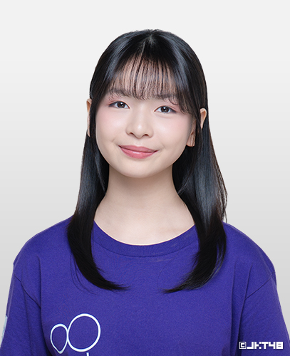

Mengenal lebih dekat Ralyne ✨
Pada 14 Februari 2026, Ralyne pertama kali diperkenalkan kepada publik sebagai bagian dari generasi ke-14 JKT48. Di atas panggung pertunjukan, ia tampil dengan senyum yang sedikit gugup namun penuh semangat, menyapa para penggemar yang hadir untuk pertama kalinya.
Dalam perkenalan tersebut, Ralyne mengungkapkan bahwa ia berusia 14 tahun dan berasal dari kota Medan. Dengan suara yang lembut, ia memperkenalkan dirinya sambil membagikan sedikit tentang perjalanan yang membawanya sampai ke panggung JKT48.
Ia juga menyampaikan bahwa keputusannya bergabung dengan JKT48 adalah untuk membanggakan kedua orang tuanya sekaligus mengejar cita-citanya menjadi seorang idol. Momen ini menjadi langkah awal dari perjalanan barunya di dunia hiburan.
Cerita kecil dari perjalanan Ralyne ✨
